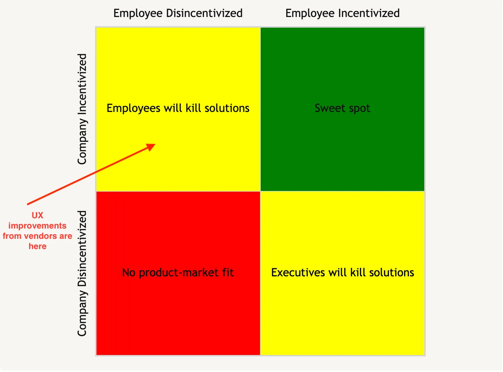

We built an LLM-powered product that improves software help UX. Although there are a few exceptions, generally speaking, no one will pay for it. Below I discuss the headwinds I encountered while trying to sell this product, headwinds that will affect anyone in the business of helping other software companies improve the UX of their product.
These headwinds aren’t worth fighting. Unless you’re offering a UX improvement that very obviously leads to more revenue, don’t get in to the UX business.
“If we have good UX, we don’t need your product“
I’ve noted [elsewhere] that when you’re selling B2B software, you’re selling to businesses and employees that may have conflicting incentives. When a solution is good for the business but bad for employees, they will sabotage your sales and slow your growth.
Selling better UX suffers from this problem. It’s the product team’s job to build good UX that drives revenue, so even if it’s better for the company to buy a UX solution, product teams aren’t incentivized to push for this. They are much more likely to get a promotion for building the revenue-driving UX than buying it.
In other words, this:

One way in which this dynamic manifested itself was when folks objected to our product by saying, “If we have good UX, we don’t need your product.” A part of what they were saying here is, “UX is our job, not yours.”
The other part of what they’re saying was that needing an LLM to overlay instructions on top of a UI points to lack of good UX copy and progressive disclosure. Interestingly, when we tried to sell LLM-generated UX copy improvements to folks who made this objection, that didn’t work. This is for the same reason selling our first solution didn’t work: UX is the product team’s job, not a vendor’s job.
The Goldilocks problem
One way of escaping the conflicting incentives discussed above is to sell to a company so small that they haven’t hired the employees who compete with your solution and are who are therefore disincentivized to adopt it. Once a company has made those hires, they’re too big for an easy sale.
This is hard to do while selling UX because it’s also possible for a startup to be too small for a UX solution. UX isn’t hard when your early-stage product only has 3 screens.
More importantly, early founders actually benefit from UX friction and bugs. Users get stuck. They agree to a call to get unstuck. The founder gets UX and product feedback on that call, builds rapport, etc.
So, startups in the UX business face a Goldilocks problem. They’ll have a hard time selling to companies that are too big1 and to companies that are too small. They have to find them sized just right.
Painkiller UX doesn’t matter
Even if you solve the Goldlocks problem, there’s another headwind to deal with, one that I should have seen early on in our user research when I spoke with a customer success consultant. During our call, she told me:
Most of the founders I work with don’t think about customer success until its too late. Their product is a few years old and they’ve already started to see some churn that they’re worried will affect their ability to raise the next round.
Translation: software companies only want to help their customers if they’re so fed up that they’re willing to churn, and customers tolerate all sorts of abuse before getting to this point.
In this sense, software customers are like painkiller users: they only quit when the experience of using is worse than the experience of not using. And things can get very bad before that happens. LinkedIn’s Sales Navigator UX drives me nuts, but its the only way to get the data I need to prospect. During user research calls, I have listened to 20-minute tirades about how awful it is to use Salesforce. Their market cap doesn’t seem to care.
When founders have a hit software product, they are selling something that has the addictive properties of a drug, or, if you prefer the more palatable VC-speak: “They’re selling pain-killers, not vitamins.” Whatever metaphor you prefer, try to sell a drug dealer on something that makes the UX of drug usage easier. Unless it somehow increases revenue, they won’t care. People are already bending over backwards to buy their product.
The tenuous connection between good UX and revenue
But doesn’t good UX increase revenue? If a user is looking at products A and B and all other things are equal, except that A has better UX, won’t they pick A? Sure, but the price of the two products can’t be equal because building a product with better UX costs something and someone has to pay that cost somehow.
We are often unwilling to pay that cost, even with a product as great as the iPhone. The leap from laptops to the iPhone is arguably the greatest UX improvement of our generation, and most of us don’t even pay full price for the device. Instead, the cost of the device is subsidized by cell carriers who are just trying to sell more data/minutes.
Even with the iPhone’s subsidies and better UX, Android has 70% of the smartphone market. We will put up with worse UX for a cheaper phone that is also partially paid for by our willingness to feed data into Google’s ads business.
Why don’t we care enough about good UX to pay for it, even though good UX saves us time? We don’t really value our time. At work, we get paid the same regardless of how efficient we are. Why pay to be more efficient by using products with good UX? At home, we already waste hours of our lives doom scrolling and binge watching Netflix. We can probably just suffer the extra 2-minutes using an app with shit UX and save our dollars for the next streaming service that drops.
If anyone values UX enough to pay for it, it would be me, someone who was working in the UX business, someone who literally curses at my computer all the time as I’m dealing with shit software. As I’ve thought more about this business and my own behavior, I realized that I’ve drastically over-estimated my willingness to pay for better UX. Wittgenstein was right:
“Nothing is so difficult as not deceiving oneself.”